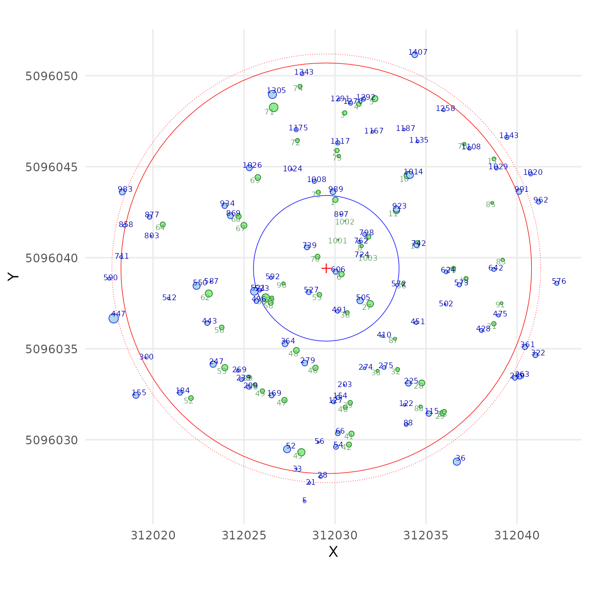
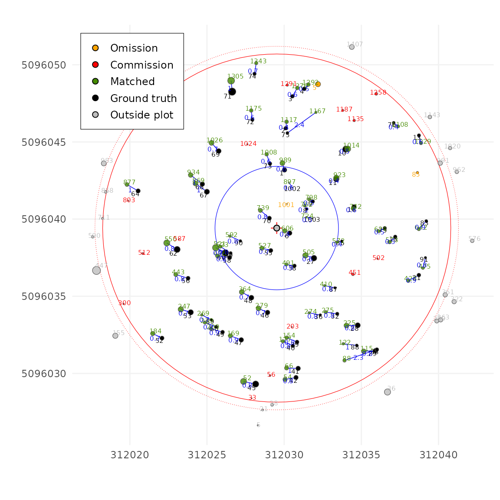
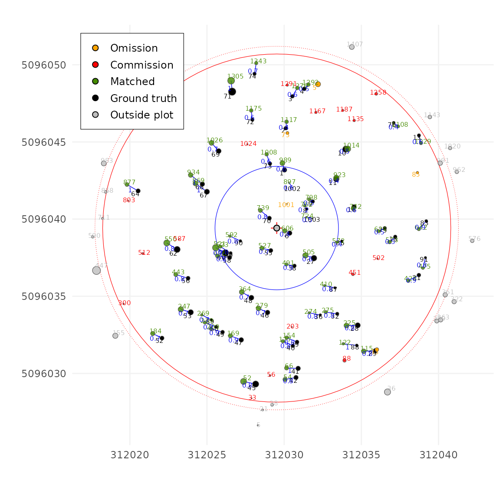
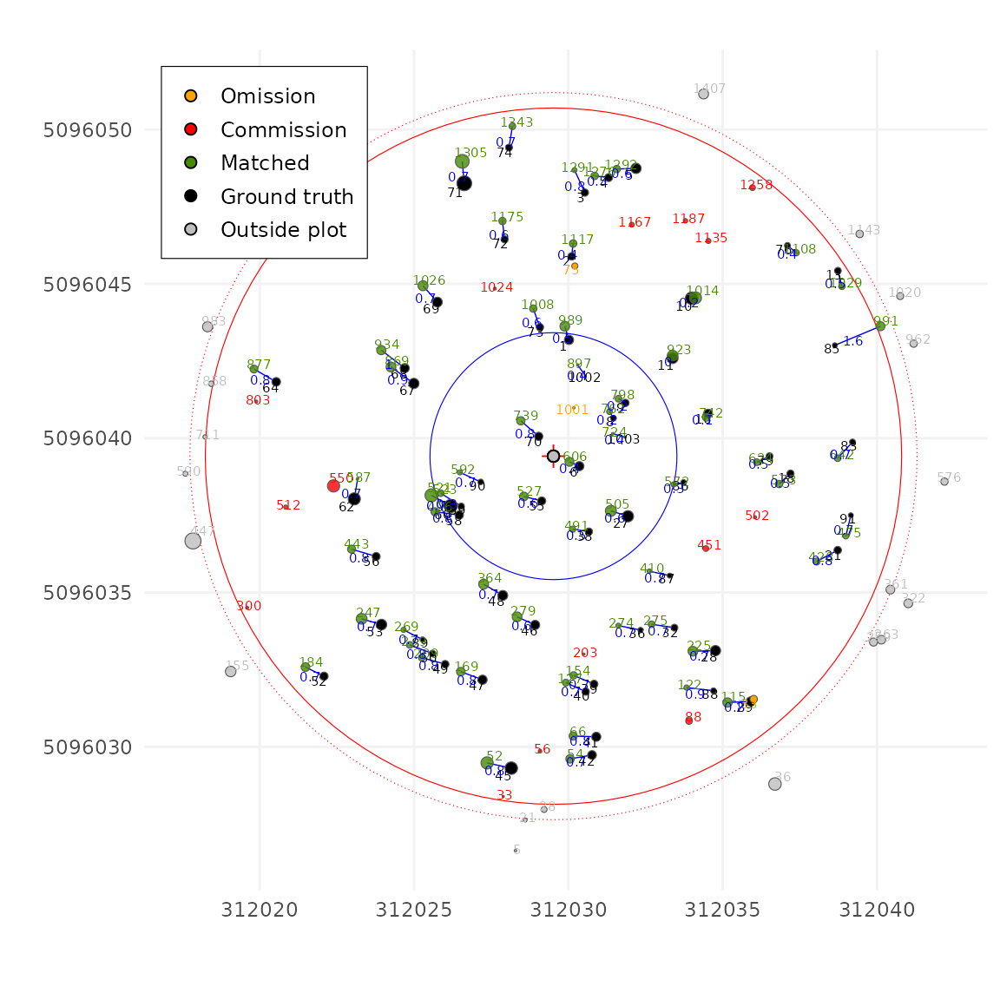

Tutorial
Tutorial.RmdIntroduction
TreeMatching matches trees from a LiDAR dataset (either
ALS or TLS) to trees in an inventory dataset by solving a Linear Sum
Assignment Problem (LSAP) in 3D space. The X and Y dimensions
represent the tree positions (a positional matching), while the third Z
dimension is artificially created using either DBH (for TLS) or tree
height (for ALS). This synthetic Z-dimension improves the accuracy of
the matching and helps avoid false positives.
The package uses the Hungarian algorithm, which always finds the optimal solution to the LSAP. This guarantees the best possible matching with the lowest total cost, based on a given cost matrix. However, the real challenge is to define a good cost function, one that leads to meaningful and accurate matches between trees.
In this tutorial, we explain how TreeMatching works and
how its parameters influence the results.
Prepare data
First let load the example data
The user’s data can come in any format, with various naming conventions and unit standards. Therefore, to ensure everything works correctly, we first need to standardize the data by specifying which columns contain the X and Y coordinates, as well as the DBH (or tree height), what are the units and so on.
PRF025_Field <- standardize(PRF025_Field, "Field_Xpj", "Field_Ypj", "DBH", "cm", crs = 2959)
PRF025_Lidar <- standardize(PRF025_Lidar, "X", "Y", "DBH", "m", crs = 2959)Next, for various reasons, the algorithm needs to know the center and
size of the plot we’re working with. This is mainly used to filter out
trees that fall outside the plot boundaries and plot graphics. In this
specific dataset, the center of the plot is already stored and repeated
in the Easting and Northing columns. We now
use this information to create the TreeMap object that
we’ll be working with in the following steps.
center <- c(PRF025_Field$Easting[1], PRF025_Field$Northing[1])
tm <- make_mapmatching(PRF025_Field, PRF025_Lidar, center, radius = 11.28)
plot(tm, scale = 2)
Linear Sum Assignment Problem
Now let’s apply tree matching using LSAP. By default, the Hungarian algorithm matches all possible pairs and finds the combination with the lowest total cost. We haven’t yet explained how the matching cost is computed, we’ll get to that later but For now, let’s set that aside and look at what the Hungarian algorithm does when no constraints are applied.
tm <- match_trees(tm, dxymax = 10000, dzmax = 10000, zrel = 40, unmatch_cost = 10000)
plot(tm, scale = 2, gg = TRUE)In this dataset, the results are not terrible, it could be much worse, but we can see that some irrelevant trees are matched. This happens because the algorithm is trying to minimize the cost of matching every tree in the inventory with a tree in the LiDAR data, whether it makes sense or not.
However, in real-world forest inventories, it’s common to have omissions (missing trees) and commissions (extra trees). The standard LSAP solver does not support these cases by default.
To fix this, we can introduce dummy trees, and assign a constant cost
to matching a real tree with a dummy one. This is exactly what the
unmatch_cost parameter does. For example, if we set
unmatch_cost = 10000, it means that matching a tree with a
dummy is very expensive, so the algorithm will avoid it unless
absolutely necessary.
Now let’s try using a very low value, like
unmatch_cost = 0.7. In this case, most trees are
not matched. That’s because it’s cheaper for the
algorithm to leave a tree unmatched than making an correct match.
tm <- match_trees(tm, dxymax = 1000, dzmax = 1000, zrel = 40, unmatch_cost = 0.7)
plot(tm, scale = 2, gg = TRUE)Parameter selection
Let’s try now with a more reasonable value (we’ll discuss how to
choose a good value later in the tutorial). Here we are using
unmatch_cost = 3
tm <- match_trees(tm, dxymax = 1000, dzmax = 1000, zrel = 40, unmatch_cost = 3)
plot(tm, scale = 2, gg = TRUE)
The results are much better!! Let’s now tune a few other parameters.
dxymax and dzmax
-
dxymaxsets the maximum horizontal (XY) distance allowed between two matched trees. If two trees are farther apart than this value, their matching cost is set to infinity, meaning they cannot be matched. -
dzmaxsets the maximum vertical (Z) distance allowed. In this tutorial, the Z value is based on DBH, sodzmax = 0.03means a 3 cm difference is allowed. For example, a tree measured in the field at 15 cm DBH cannot be matched with a LiDAR tree measured at 11 cm DBH, the cost would be infinite.
After setting reasonable values for these two parameters, the matching results now look much better.
tm <- match_trees(tm, dxymax = 2, dzmax = 0.05, zrel = 40, unmatch_cost = 3)
plot(tm, scale = 2, gg = TRUE)
zrel: weight of the Z Dimension
One parameter remains to be explained: zrel. To
understand it, we first need to explain how the matching cost is
computed.
By default, the matching cost is simply the 3D distance between two trees, where Z is the DBH or the tree height. However, DBH and XY positions are not directly comparable, and calculating the 3D distance naively may give too much or too little weight to Z.
To solve this, the Z dimension is scaled so that XY and Z are on a similar scale and can be compared. But this equal scaling isn’t always ideal: sometimes DBH or height may dominate the match inappropriately.
That’s where zrel comes in. It lets you control the
weight of Z (DBH or height) relative to XY. A value of 0 means Z has no
weight, matching is based only on XY distance, pretty much like a
k-nearest-neighbors (k-NN) search. This often causes incorrect matches,
such as pairing a large tree with a nearby smaller one as seen
below.
tm <- match_trees(tm, dxymax = 2, dzmax = 0.05, zrel = 0, unmatch_cost = 3)
plot(tm, scale = 2, gg = TRUE)
A value of infinity (or a very large number) gives no weight to XY,
and matching is done entirely on DBH, also usually a very very bad idea.
In practice, because we also have limits (dxymax and
dzmax) that restrict which trees can be paired, the effect
of zrel is limited within reasonable ranges. Below a pure
DBH matching:
tm <- match_trees(tm, dxymax = 10000, dzmax = 10000, zrel = 100000, unmatch_cost = 10000)
plot(tm, scale = 2, gg = TRUE)Consequently, the matching process depends on two types of parameters:
-
Settings
dxymaxanddzmax: These should be set to reasonable values to constrain the algorithm and avoid obviously incorrect matches. -
Parameters
zrelandunmatch_cost: These control the matching behavior more subtly.
The zrel parameter is not critical, but fine-tuning it
can improve a few edge-case matches. The default value is 40% weight for
Z compared to XY, and values between 30 and 80% are generally
reasonable. At zrel = 100, XY and Z contribute equally to
the matching cost.
On the other hand, unmatch_cost is a very important
parameter. It should be lower than the cost of a bad match, to avoid
forcing incorrect pairings but higher than the cost of a good match, to
prevent skipping valid matches.
Finding the right unmatch_cost value can be challenging.
If the user does not specify it, the algorithm uses a simple heuristic
to estimate a reasonable default.
tm <- match_trees(tm, dxymax = 2, dzmax = 0.05, zrel = 40)
#> unmatch_cost = 1.49
plot(tm, scale = 2, gg = TRUE)
Shiny App
A Shiny app is also available to help users interactively explore the matching parameters. It provides sliders and input fields to easily test different values and find the settings that work best for your dataset.
This visual interface is especially useful for beginners, as it allows you to:
- Adjust parameters like
dxymax,dzmax,zrel, andunmatch_costwith sliders - Instantly see how changes affect the matching results
- Experiment without writing code
This makes it much easier to understand the impact of each parameter and to fine-tune your matching process.
treemap = lsap_app(treemap)